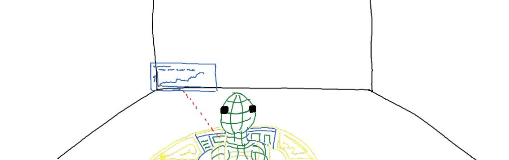
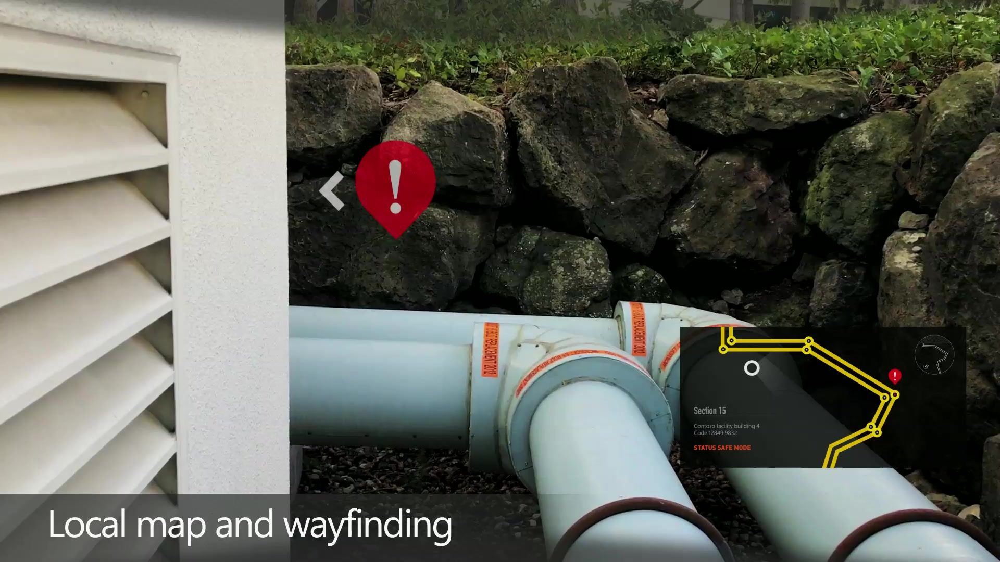
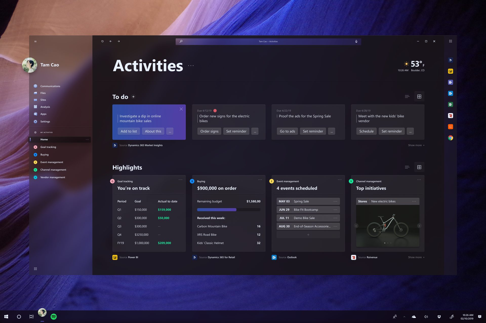
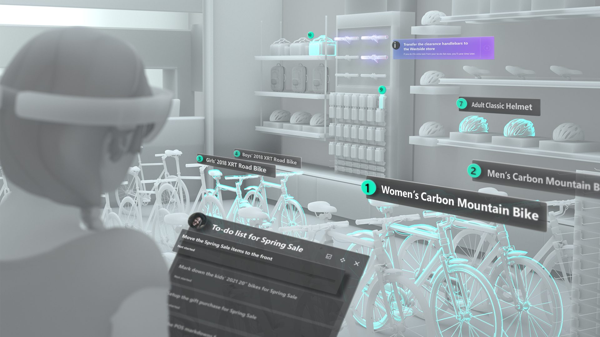
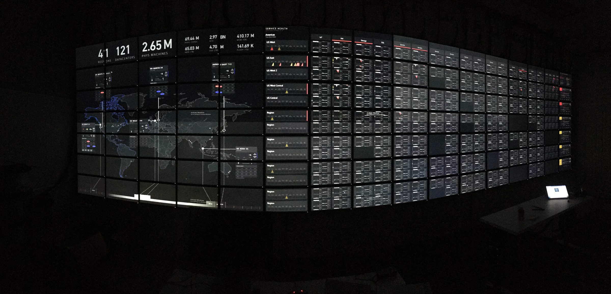
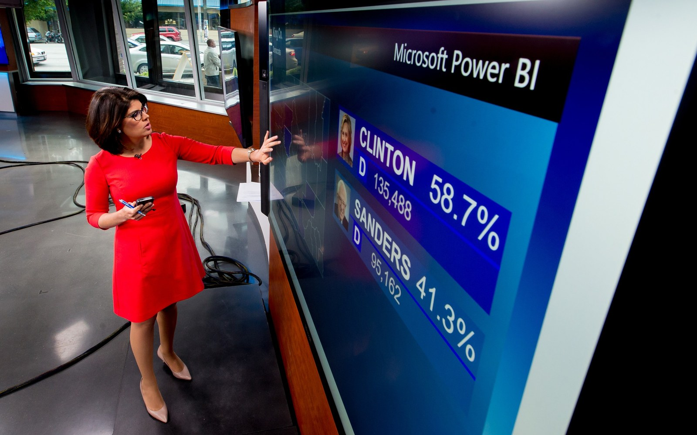

Studio X
"Put Power BI on HoloLens" became a question about people whose work isn't at a desk. Then it grew into a bigger idea: connected data from every app, on any device.
The ask, reframed
The ask was "put Power BI on HoloLens." The better question was what data means for people whose work isn't at a desk: the pipeline inspector, the technician at the machine.
Narrative before technology
We talked with customers, including a pipeline company and a museum, about their jobs, not the technology. When do they need their hands free? When does data help them do the work? We broke each job into steps and the information each step needs. Then we sketched every moment and wrote down why each thing would show up automatically. That told us what the systems had to know. A mini-map, for example, needs the worker's location, a map of the pipeline, a digital copy of the site (a digital twin), and which way the worker is facing. We drew it all as a comic-book storyboard and found real locations for each frame.
Sketch to film
I drew the sketches myself in January 2017, in PowerPoint on a giant touchscreen TV: a sketch slide, then a pixel slide, with reviews done by circling and annotating on the big screen. A month later we filmed it. That's me walking the pipes. Nothing was rendered in the headset; I knew where every element sat from the storyboards and put my finger where each button would be.





The meeting
Power BI's leadership greenlit it as the product's vision, and then we took it to Satya Nadella. When the video played, he recognized me on screen, stopped the meeting and asked me to introduce myself. I walked him through what we'd learned and why we'd made each decision. He greenlit it, and it became Power BI for HoloLens.
Shipped
Power BI for HoloLens launched in the Microsoft Store in May 2018.
Mixed reality goes to work
That vision also helped shift Microsoft's strategy for HoloLens and mixed reality. HoloLens began as an entertainment device: Kinect-style sensing on your head, with a display, built by teams with deep roots in video games. After that meeting, many of those teams started moving toward enterprise work.
I was already working with the teams behind the hardware, the operating system and the apps whose priorities were shifting, so I was well placed to help lead that change. It deepened when one of those organizations, design teams included, joined ours. That work across the company is still the most rewarding period of my career.
What HoloLens taught us
HoloLens taught us mixed reality wasn't the product. The product was connected data, with its context, from every app a worker uses, anchored in the physical world and reachable from any device: headset, phone or laptop. That became Bifrost.
Bifrost
Bifrost was one activity-based surface across Dynamics 365, Power BI, Power Apps and Office. "In the same way we're unifying our data, we need to unify the user interface. They're two sides of the same coin." AI would learn the patterns in how people work and assemble the experience around the activity. We developed it with customers and took it to Business Applications leadership in 2019. I wrote and narrated the vision film.
The idea kept going. Years later, I drove it again as Unified Copilot for Fabric. And Fabric's Real-Time Intelligence team, led by my engineering partner from those years, is building much of the back-end Bifrost needed.




The lesson
I led Studio X as a hands-on manager and its principal designer, and I didn't spend enough time helping others own projects end to end. For a while, someone on the team did that. When they retired, I didn't set up a new owner I could review and coach. So when I took paternity leave in 2019, the work stalled. That was on me, and I carried the lesson into everything after: build teams that could take my seat.
Other wins along the way

Cloud Collaboration Center
Azure's operations center: a wall of 184 screens for the engineers who keep the cloud running. Research in the room showed most people couldn't read the wall from their seats. The redesign used fewer, larger signals, a minimum type size and a companion app.

Surface Hub
"Port Power BI to Surface Hub" became "what is collaboration with data?" My ink sketch settled where the toolbar goes when a visual hits the edge: don't make people chase the controls. By May 2016 it was on air: KING 5 news used Power BI on a Surface Hub for primary-night coverage.
IoT and blockchain design
Brought the Internet of Things (IoT) and blockchain design teams into Studio X. The studio grew to about 20 people.